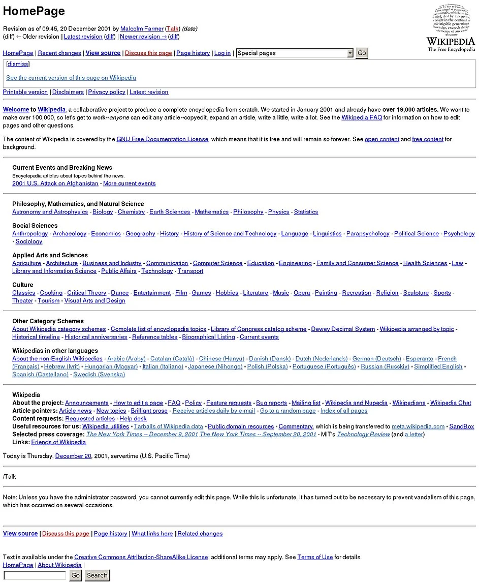

M7: HTTP Daemon (httpd)
1. 背景
HTTP (Hypertext Transfer Protocol) 是互联网上最广泛使用的应用层协议之一。从简单的静态网页 (例如《操作系统》的课程网站) 到复杂的 Web 应用 (例如我们的教务系统到能在网页中直接使用的 Office 365)，它们都是由 HTTP 服务器支撑的！HTTP 服务器的基本功能接收来自客户端的请求，并返回响应，例如以下是一个典型的 HTTP 请求：
其中 “GET 是请求的方法” 表示获取资源。除了 GET 外，还有 POST、PUT、DELETE 等，用于执行不同类型的操作。GET 后的 “/index.html” 是请求的资源路径，也就是我们在浏览器栏中输入的域名后的路径，HTTP/1.1 是 HTTP 协议版本。Host 是指定服务器主机名，例如网页的域名。很多网站都会直接拒绝使用 IP 的访问。User-Agent 是客户端软件信息——这就是为什么网页能自动 “识别” 手机和电脑，以及有些网站会拒绝你的 curl 请求。
HTTP 服务器解析请求后，会根据请求的资源路径，从本地文件系统中读取资源或调用另一个程序，也就是我们俗称的 “后端”，将结果返回给客户端。HTTP 协议本身是无状态的，因此通常需要 Cookie、Session 或 Token 等机制实现用户登录等需要状态保持的功能，浏览器会自动在 request header 中携带相应的 Cookie 信息 (Cookie 字段) 发送给服务器，以实现用户登录功能。
2. 实验描述
2.1 总览
2.2 描述
实现一个支持多线程的 HTTP 服务器，监听 prot 端口 (默认为 8080)，能够处理并发的 HTTP 请求。不用担心，我们已经提供了一份 “可以运行” 的 httpd 供大家参考，你可以直接运行它，并且在浏览器中访问任何 url，都可以得到 “under construction” 的响应。没错，你的浏览器能直接访问你的 Web 服务！你走出了迈向互联网时代的第一步！
服务器需要支持以下功能：
- GET
/cgi-bin/开头的 URL，调用 CGI 程序返回动态内容。如果路径非法或 CGI 脚本不存在，返回 404 错误。如果 CGI 脚本执行失败，返回 500 错误。 - 并发到达的请求应当尽快接收并尽可能并行处理。并行执行的请求数不得超过 4 个。注意评测时，CGI 脚本执行的时间可能很长。
- 按照请求到来的顺序输出日志到标准输出，在每次日志输出后都请确保执行 fflush。我们已经提供了 log_request 函数，请调用它。
⚠️log_request
根据 log_request 的输出：
你需要输出正确的路径，例如 /cgi-bin/echo，以及正确的状态码，例如 CGI 程序返回的 403。
2.3 解释
CGI (Common Gateway Interface) 是一种允许 Web 服务器与外部程序通信的标准协议。当服务器收到以 /cgi-bin/ 开头的请求时，它会：
- 解析请求路径，确定要执行的 CGI 程序。CGI 程序可以是任何可执行文件，包括编译后的二进制程序、脚本文件（如 Python、Shell 脚本等）、其他可执行程序等。CGI 程序保存在
cgi-bin/目录下，例如cgi-bin/echo。 - CGI 要求创建子进程来执行该程序，并将 HTTP 请求的信息 (如请求方法、请求头、查询字符串等) 通过环境变量传递给 CGI 程序。
- 程序执行完毕后，将 CGI 程序的输出 (标准输出) 作为 HTTP 响应返回给客户端。
需要注意的是，CGI 程序必须输出完整的 HTTP Response，程序必须处理各种错误情况 (如文件不存在、权限不足等)，服务器需要正确处理 CGI 程序的退出状态。例如，当收到请求 GET /cgi-bin/hello?name=world 时：
-
服务器会执行
cgi-bin/hello程序； -
设置环境变量：
-
REQUEST_METHOD=GET,QUERY_STRING=name=world -
(其他 HTTP 头信息我们不要求处理)
-
CGI 程序执行并输出 HTTP 响应，例如
- 服务器将输出发送给客户端。
我们提供了一个正确的 CGI 脚本 “echo” (bash; 当然，你可以用任何方式实现你的后端程序)，如果实现正确，可以在浏览器中访问 http://localhost:8080/cgi-bin/echo 看到请求的方法 (GET)、参数、环境变量和日期。
⚠️AIGC Policy这个实验对大语言模型来说是 “刚好适合” 的任务，甚至我们的参考实现都是由 LLM 直接一次生成正确的。但为了获得最佳的学习效果，你可以借助大语言模型查阅 CGI 的相关标准，询问任何不理解的地方，但请你不要使用大语言模型直接实现代码。
2.4 HTTP Request 和 Response 格式
在 HTTP/1.1 协议中，每个请求由请求行、请求头 (header)、空行以及可选的请求消息体依次组成。请求行首先指出请求方法 (如 GET、POST 等)、请求目标 (包含资源路径和可选查询字符串) 以及协议版本 (通常为 HTTP/1.1)，三者之间以空格分隔，并以 CRLF (\r\n) 结束。随后是一系列请求头，每一行由头部字段名、冒号、空格和字段值构成，同样以 CRLF 结尾。一个空行 (连续两个 CRLF) 标志着请求头的结束，如果请求方法要求在消息体中携带数据 (例如 POST 上传表单)，则在空行之后紧跟消息体内容，其字节长度由 Content-Length 头精确指明。
服务器在收到完整请求后，会返回一个 HTTP/1.1 响应，结构与请求类似，由状态行、响应头、空行和可选的响应消息体依次构成。状态行包含协议版本、三位数字状态码 (如 200、404、500 等) 以及原因短语，三者以空格分隔并以 CRLF 结束。随后是一系列响应头，例如 Content-Type 用于说明消息体的媒体类型，Content-Length 指示消息体的字节长度，Connection 控制是否保持连接等。响应头结束后以空行分隔，紧接着是响应消息体，其内容可以是 HTML、JSON、纯文本或二进制数据。消息体发送完毕后，如果 Connection 头为 close，服务器将关闭连接，否则保持连接以便复用处理后续请求。
你可以在浏览器中查看完整的 HTTP Request 和 Response。
💬Prompt: 如何在浏览器中查看完整的 HTTP Request 和 Response？ claude-3.7-sonnet: ▶️
3. 正确性标准
首先，你需要正确地实现 CGI 脚本的执行。我们会在 cgi-bin 目录下放置若干 CGI 脚本，并使用 curl 命令测试你的 httpd 是否能够正确地执行这些脚本。如果你的 httpd 能正确解析 URL、传递环境变量 REQUEST_METHOD 和 QUERY_STRING，并正确返回 CGI 脚本的输出，可以通过 Easy Test Cases。
对于 Hard Test Cases，我们会并发地请求你的 httpd。此时，不同请求的 CGI 脚本的处理时间可能有显著区别，但你的 httpd 应当按收到请求的顺序输出日志，日志包含 CGI 脚本返回的 HTTP response status code (例如 200, 404, 500)。
4. 实验指南
4.1 框架代码中的 httpd
实验框架代码实现了不支持 CGI、不并发的 httpd。代码的核心是 handle_request 函数：
void handle_request(int client_socket) {
char buffer[BUFFER_SIZE];
int bytes_received;
// Read request
bytes_received = recv(client_socket, buffer, BUFFER_SIZE - 1, 0);
if (bytes_received <= 0) {
return;
}
buffer[bytes_received] = '\0';
printf("Got a new request:\n%s\n", buffer);
// Send "Under construction" response
const char *response_body = "Under construction";
int body_length = strlen(response_body);
char content_length_header[64];
sprintf(content_length_header, "Content-Length: %d\r\n", body_length);
send(client_socket, "HTTP/1.1 200 OK\r\n", 17, 0);
send(client_socket, "Content-Type: text/plain\r\n", 26, 0);
send(client_socket, content_length_header, strlen(content_length_header), 0);
send(client_socket, "Connection: close\r\n", 19, 0);
send(client_socket, "\r\n", 2, 0);
send(client_socket, response_body, body_length, 0);
// Close the connection
close(client_socket);
}
函数的参数是一个 “client_socket”，它实际上是一个文件描述符 (更精确地说，是一个 socket 描述符)，当然我们也可以使用 read 和 write 读写——只是我们用了操作系统提供的网络 API 中的 send 和 recv，你把它们理解成读取连接到 “远端” 管道的 read 和 write 即可。它首先读出一个不太长的 http request，然后构造一个 HTTP/1.1 200 OK 的 response，回复的字符串是 “Under construction”。
main 函数则在做出必要的初始化，包括 socket 的创建、绑定、监听，然后接受连接并调用 handle_request 处理请求。我直接在 Cursor 中打开了框架代码，然后把 “科普解释” 的任务交给了 AI。AI 提供的信息是一个很好的起点，你可以持续和 AI 对话快速理解 HTTP 服务器的工作原理。
💬Prompt: ...给我用普及的口吻解释一下其中出现的和网络相关的概念。 claude-3.7-sonnet: ▶️
4.2 前端和后端
今天，Web 的 “前端” 是指用户直接交互的部分，主要负责页面的展示与用户体验，常用技术有 HTML、CSS、JavaScript 等。“后端” 是指支撑前端的服务器端部分，负责数据存储、业务逻辑处理和接口提供，常用技术有 Java、Python、Node.js 等，还涉及数据库、负载均衡器等系统组件。前端注重界面与交互，后端注重数据处理与安全，两者共同协作实现完整的网站或应用。
在这里回顾一下历史会很有趣。早期的 Web 绝大多数内容都属于 “前端”，它们是静态的，由 HTML 文件组成，浏览器负责渲染。网络后端只是负责解析 url 中的路径，例如 /wiki/index.html，从本地的文件系统中读取文件并返回给浏览器。当然，既然负责返回页面的后端是程序，我们自然可以 “hack” 它，使我们在请求 url 的时候，根据服务器上存储的数据实现的动态的内容，例如 CGI 实现的 Web Forum: 你可以基于 UNIX 文件系统用几百行脚本实现一个 “在线讨论论坛”，允许用户浏览分区帖子、发表帖子、回复帖子等。下面是 2001 年的 Wikipedia 首页，在那时这已经是非常 “了不起” 的项目了——当时的开发人员做梦也想不到今天 Vibe Coding 半小时就能实现一个完成度高得多，部署在云平台就能上线实装的系统：

随着互联网的发展，前后端的分工变得更加明确。Web 2.0 时代引入了 AJAX 技术，使得前端可以异步地向后端请求数据，而不必刷新整个页面，大大提升了用户体验。这也促使了前端框架的蓬勃发展，如 jQuery、Angular、React 和 Vue 等，使得前端开发更加模块化和组件化。同时，后端技术也在不断演进。从早期的 CGI 脚本，到 PHP、ASP 等服务器端脚本语言，再到现代的 MVC 框架如 Ruby on Rails、Django、Spring Boot 等，后端开发变得更加结构化和高效。微服务架构的兴起进一步改变了后端的设计理念，将大型应用拆分成多个独立的服务，每个服务负责特定的功能，通过 API 相互通信。云计算的普及也极大地改变了后端部署方式。从传统的物理服务器，到虚拟机，再到现在的容器化和服务器无感知计算 (Serverless)，部署变得更加灵活和可扩展，通过底层数据库、大数据系统的支持，应用可以无缝扩展到千万级用户。
前后端分离已成为现代 Web 开发的主流模式。前端通过 RESTful API 与后端通信，后端专注于提供数据和业务逻辑，前端负责数据展示和用户交互。课程网站使用了 Next.js 统一管理前后端代码，例如你看到的这个实验描述页面，Markdown 的实验讲义是在浏览器中渲染成 DOM Tree 的，而所有页面的前端代码都是共享的，浏览器会自动缓存这些 JavaScript 脚本，使你在打开页面时只需加载很少的数据。前端技术也彻底改变了程序的开发模式，我们已经可以通过小程序，在微信和支付宝的 WebView 里完成从校园卡充值到医保挂号的 “任何事” 了。在这背后是编程语言、IDE、编程辅助等技术共同进步的杰作。